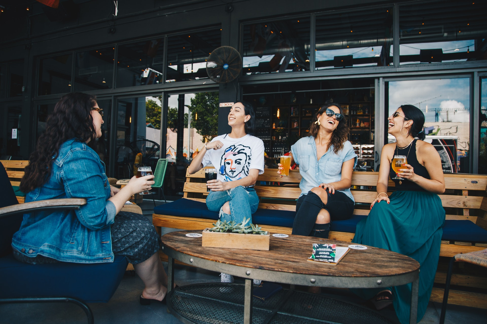

About Us
Matilda Bay Restaurant is located on the edge of Perth’s beautiful Matilda Bay in Crawley. Not a day goes by when we’re not wow’ed by the beauty of what’s on our doorstep as we overlook Matilda Bay with Kings Park and Perth City as our vista.
Our story is one of understanding the significance of food as a social experience. We understand there is something special about sharing food, whether that be with a loved one, or loved ones. It’s a long held ritual, an opportunity to bond, to interact, to create memories, to live.
It’s many of these philosophies that drive what we do for you at Matilda Bay. Whether you’re joining us for dinner in the restaurant overlooking the bay, a drink with friends in our bar, a small work or personal gathering in our private Wine Room, training or a product launch in the Catalina Room or sharing your special day with family and friends as you marry in our Roe Room, we look forward to making your experience memorable, significant and mouthwateringly enjoyable.
Matilda Bay Restaurant opened it’s doors in 1968, but not in it’s current form. Originally serving classical French cuisine, it changed to the Mexican themed ‘El Sombrero’ in the mid 70’s where in 1984 the current owner and management team headed by Warwick Lavis changed the name. In 2005 the venue was redeveloped with the restaurant being refurbished in 2007 delivering the latest in the evolution of our stunning Matilda Bay Food + Wine experience.